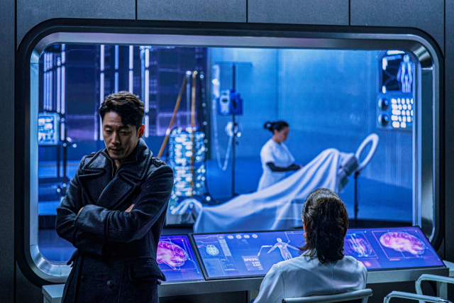
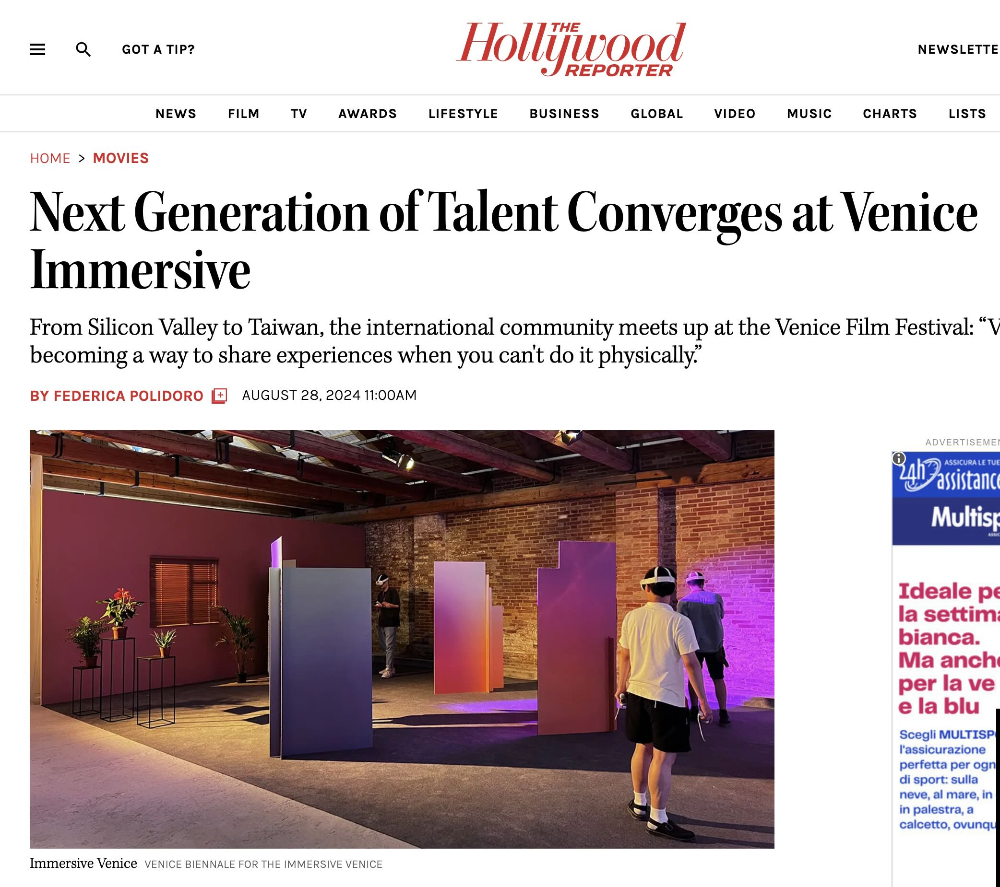
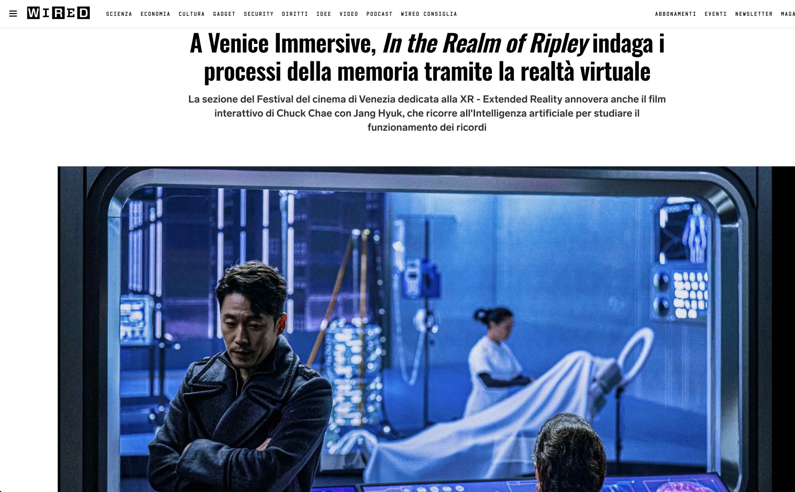
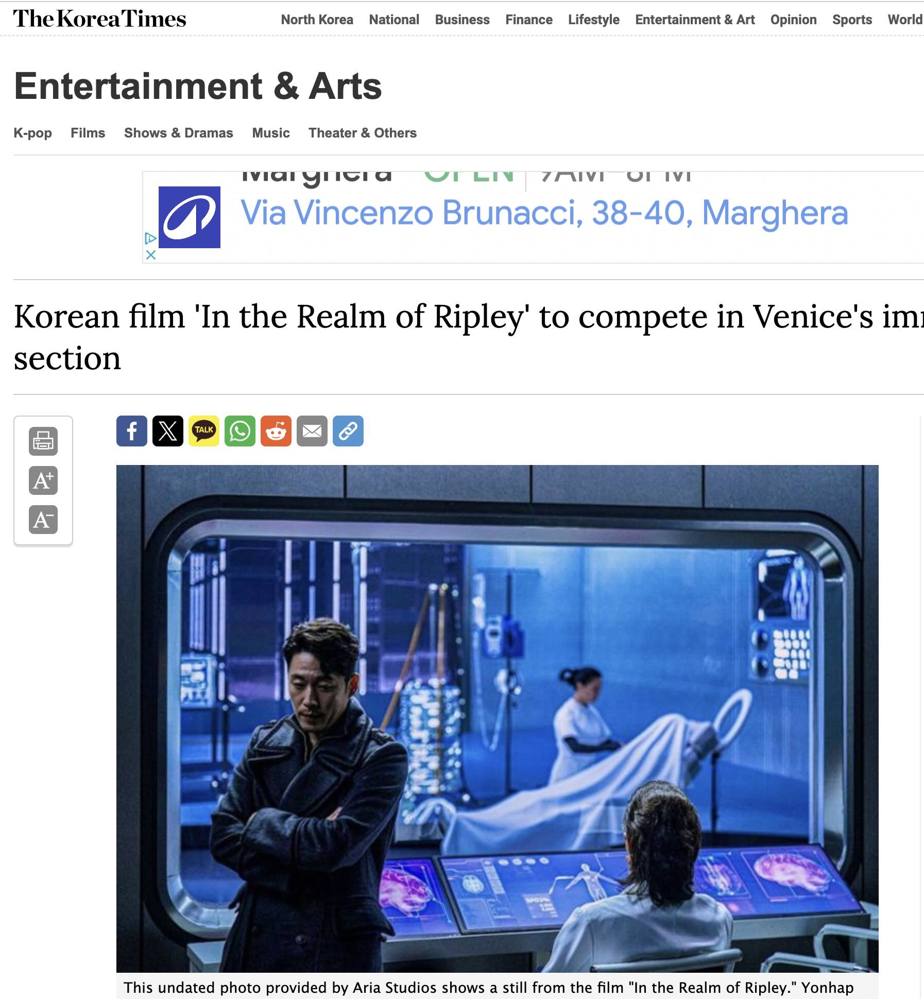

NEWS

AUG 28 / 2024
The Hollywood Reporter : Next Generation of Talent Converges at Venice Immersive
Next Generation of Talent Converges at Venice Immersive
From Silicon Valley to Taiwan, the international community meets up at the Venice Film Festival:
“VR is becoming a way to share experiences when you can't do it physically.”

AUG 28 / 2024
Wired IT : A Venice Immersive, In the Realm of Ripley
A Venice Immersive, In the Realm of Ripley indaga i processi della memoria tramite la realtà
virtuale
La sezione del Festival del cinema di Venezia dedicata alla XR - Extended Reality annovera anche
il film interattivo di Chuck Chae con Jang Hyuk, che ricorre all'Intelligenza artificiale per
studiare il funzionamento dei ricordi

AUG 28 / 2024
[문화연예 플러스] '아파트: 리플리의 세계' 베니스 영화제 공식 초청
채수응 감독의 영화, '아파트: 리플리의 세계'가 다음 달 28일 열리는 베니스 국제영화제 '이머시브' 경쟁 부문에 공식 초청됐습니다.
'이머시브'는 가상현실 등을 다룬 다양한 작품들을 소개하는 섹션으로, 채 감독은 지난 2018년 영화 '버디 VR’로 이머시브 경쟁 부문 최고상인 '최우수 VR 체험상'을
수상한 바 있는데요.
올해 초청된 영화는 2080년을 배경으로 과거에 일어났던 미제 살인사건의 유일한 목격자이자 뇌사 상태에 빠진 소년의 기억 속으로 들어가 단서를 찾아가는 형사의 이야기인데요.

AUG 28 / 2024
The Hollywood Reporter : Next Generation of Talent Converges at Venice Immersive
Next Generation of Talent Converges at Venice Immersive
From Silicon Valley to Taiwan, the international community meets up at the Venice Film Festival:
“VR is becoming a way to share experiences when you can't do it physically.”

AUG 28 / 2024
The Hollywood Reporter : Next Generation of Talent Converges at Venice Immersive
Next Generation of Talent Converges at Venice Immersive
From Silicon Valley to Taiwan, the international community meets up at the Venice Film Festival:
“VR is becoming a way to share experiences when you can't do it physically.”